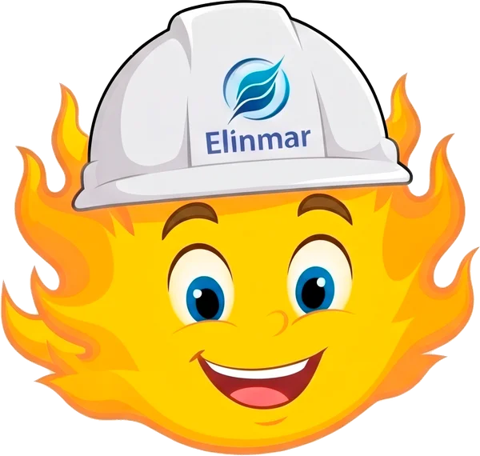
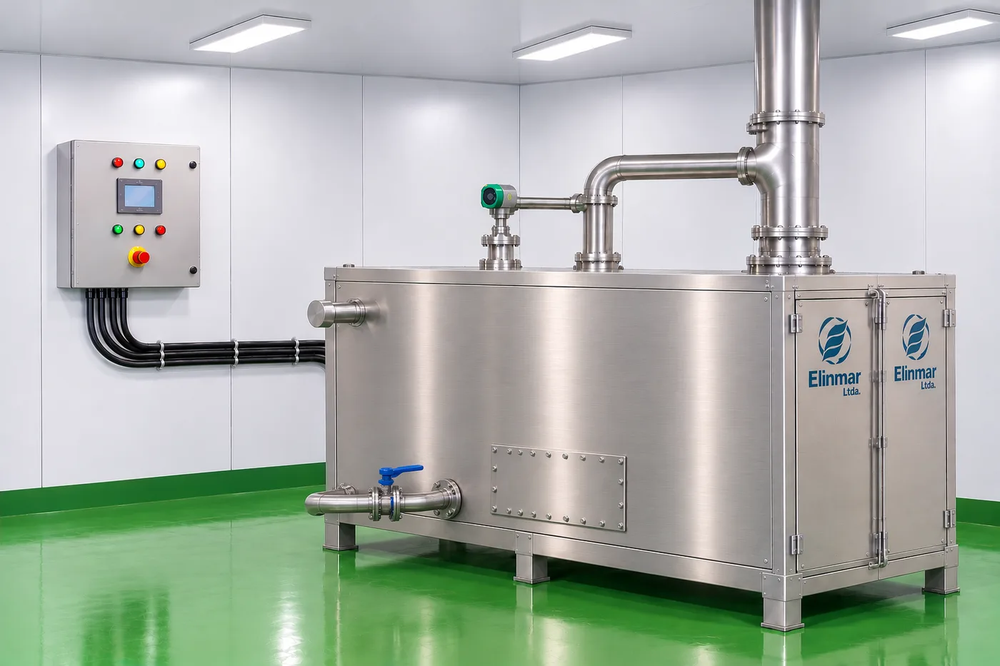
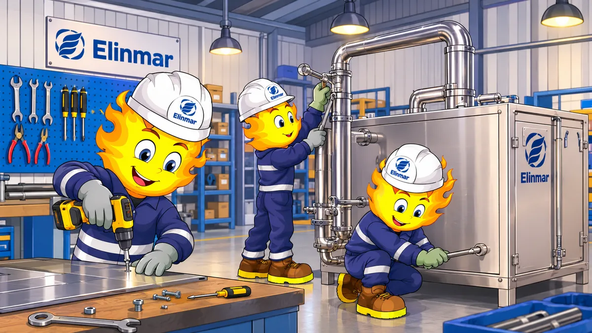
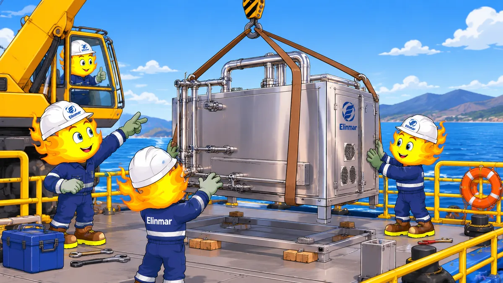
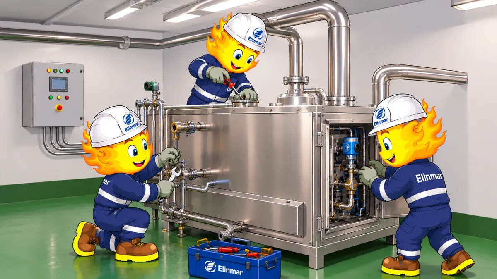

Fabricamos plantas de tratamiento certificadas (Jema JMWC60), desarrollamos maestranza en acero inoxidable AISI 316L y brindamos soporte electromecánico en alta mar para centros acuícolas.


Fabricamos e instalamos la planta de aguas negras Jema JMWC60 para pontones habitacionales.
Ver planta ➔
Estanques y componentes en acero inoxidable, fabricados en nuestro taller de Chonchi.
Ver taller ➔
Instalación de equipos sanitarios y salas técnicas en los centros de cultivo.
Ver servicios ➔
Mantenciones periódicas y soporte técnico en los centros, incluso en alta mar.
Ver mantención ➔Revisamos los requerimientos técnicos y la dotación del pontón para preparar la propuesta.
Construcción en Chonchi en acero inoxidable AISI 316L, con pruebas hidráulicas antes del despacho.
Instalación de la planta y conexión de sistemas en la sala de máquinas del pontón.
Asistencia técnica y mantenciones periódicas en terreno y alta mar.
La JMWC60 es un equipo compacto pensado para salas técnicas de pontones. Las dimensiones de instalación se definen en la evaluación técnica, según el espacio disponible en cada pontón.
Los requerimientos eléctricos se revisan junto a su equipo durante la evaluación técnica, considerando la generación disponible en el pontón.
Depende de la ubicación del centro y de las condiciones logísticas. Coordinamos el montaje y la puesta en marcha directamente con su equipo de operaciones.
Sí. Realizamos mantenciones preventivas y correctivas en terreno, incluidos centros en alta mar. La frecuencia se define según el uso y la dotación del pontón.
Sí. El sistema permite supervisar su funcionamiento desde la oficina, sin necesidad de estar en el pontón.
Sí. Contamos con maestranza propia en Chonchi, especializada en acero inoxidable AISI 316L, donde realizamos pruebas hidráulicas en taller.
Complete el formulario de cotización indicando el tipo de requerimiento, la capacidad o tripulación y la ubicación del centro. Le enviaremos una propuesta técnica y comercial.
¿No encontró lo que buscaba? Cuéntenos su proyecto y le enviamos una propuesta.
Solicitar Cotización